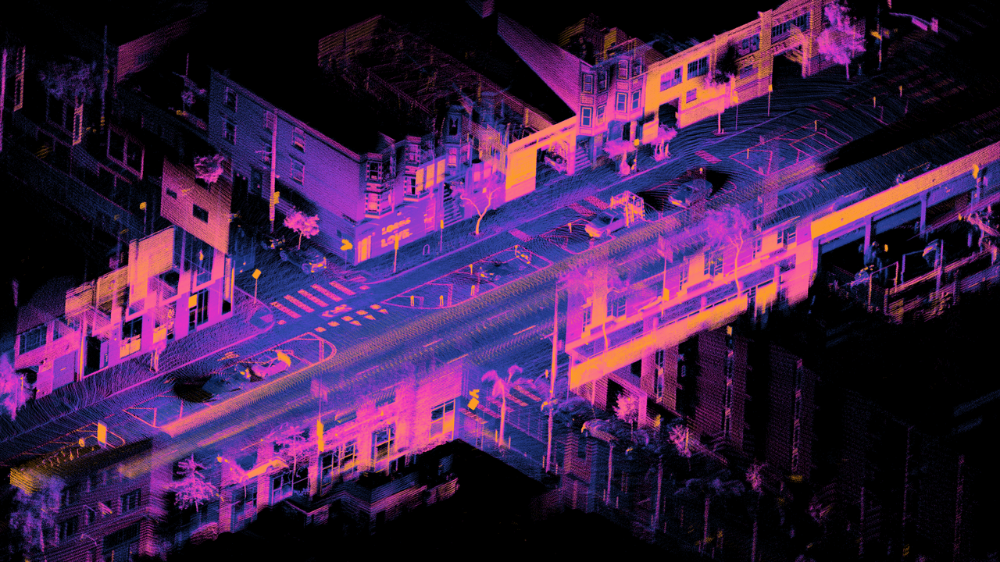

Transportation AI and Infrastructure Intelligence
Crash narratives, roadway images and geometric observations describe different aspects of transportation infrastructure and operations. Our published work uses natural language processing to identify wrong-way-driving records and mixture-density networks to model incident-clearance duration. Current infrastructure research examines the detection and mapping of sidewalks, bicycle facilities and speed-management treatments from imagery and LiDAR.
- Applying Natural Language Processing to Identify Critical Textual Phrases for Classification of Wrong-Way Driving Crashes
2026 · Journal article · Journal of Transportation Engineering, Part A: Systems - Prediction of Traffic Incident Clearance Duration Using Neural Network for Multimodal Data Distribution
2024 · Journal article · Journal of Transportation Engineering, Part A: Systems